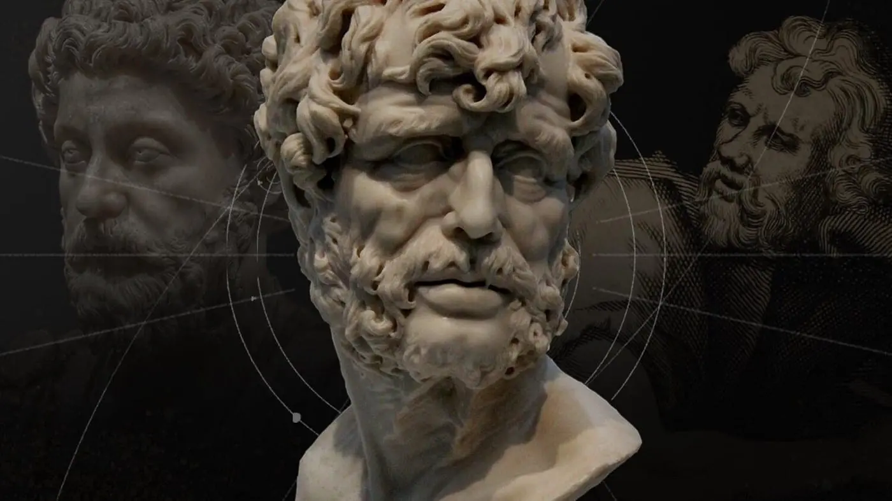

O estoicismo é uma filosofia antiga que surgiu na Grécia no final do século IV aC e foi desenvolvida por
filósofos como Zenão de Cítio, Crisipo e Epiteto. A filosofia estoica se tornou muito popular no mundo
greco-romano e teve uma grande influência na cultura e na história ocidental.
O estoicismo se concentra em ensinar aos seus seguidores como viver uma vida virtuosa, em harmonia com a
natureza e com os outros seres humanos. Os estoicos acreditavam que, através da prática da virtude, era
possível alcançar a paz interior e a felicidade duradoura.
A filosofia estoica enfatiza a importância do autocontrole, da autodisciplina e da razão. Os estoicos
acreditavam que a mente é a chave para alcançar a felicidade e que devemos aprender a controlar nossos
pensamentos e emoções para alcançar um estado de equilíbrio e serenidade.
Os estoicos também acreditavam que devemos aceitar os eventos externos, sejam eles bons ou ruínas, como
parte da ordem natural das coisas. Eles acreditavam que devemos aprender a nos adaptar às mudanças e
desafios da vida, ao invés de nos preocuparmos ou resistirmos a eles.
Outro aspecto importante do estoicismo é a crença na igualdade de todos os seres humanos. Os estoicos
acreditavam que todas as pessoas têm o mesmo valor e que devem tratar todos com igualdade e respeito.
Hoje em dia, o estoicismo ainda é considerado e respeitado por muitas pessoas em todo o mundo, como uma
abordagem prática para viver uma vida mais plena e satisfatória. A filosofia estoica continua a ser uma
fonte de inspiração e orientação para muitas pessoas que buscam viver de forma mais consciente e virtuosa.
Alguns dos principais filósofos estoicos incluem Sêneca, Epiteto, Marco Aurélio e Musônio Rufo.
Sêneca

Retrato de Sêneca Sêneca foi um dos importantes filósofos
e intelectuais do Império Romano. Além disso, teve uma posição de destaque como orador, escritor,
advogado e político. De família nobre, Lúcio Aneu Sêneca (em latim, Lucius Annaeus Seneca), nasceu em
Córdoba, atual Espanha, por volta de 4 a.C. e morreu em Roma, no ano 65 d.c.. Filho Marco
Annaeus Seneca, nasceu em Córdoba, atual Espanha, por volta de 4 a.C. e morreu em Roma, no ano 65
d.c..
Filho Marco Aneu Sêneca (Sêneca, o Velho), um destacado orador, desde pequeno viveu em Roma, local donde
estudou Filosofia e Oratória e, mais tarde, Direito. Ficou famoso pela influência que possuía,
trabalhando
no Senado Romano e ademais, começou a palestrar sendo um dos melhores oradores e intelectuais estoicos
de
Roma.
Morou também no Egito e permaneceu exilado em Córsega, na França, por ser julgado adúltero. Quando
retornou
a Roma, por volta do ano 49 d.c., aos 26 anos, decorrente de sua erudição e brilhantismo, foi escolhido
para
atuar como preceptor e conselheiro do Imperador Nero. Permaneceu na vida pública até o ano 62 d.C..
A despeito do conforto que conquistou, o filósofo sempre aderiu à simplicidade. Mesmo assim, foi acusado
de
planejar a morte do Imperador Nero (Conspiração de Pisão) sendo obrigado a cometer o suicídio donde
cortou
os pulsos.
Sêneca foi um filósofo, poeta e humanista que se ocupou de refletir e escrever sobre a alma, a
existência
humana, ética, lógica e natureza, do qual desenvolveu uma abordagem filosófica diferente daquela que
vigorava no pensamento filosófico de Roma. Grande representante do Estoicismo (ética naturalista e
lógica
formal), propunha a igualdade entre os homens sendo avesso à escravidão e à distinção social.
Dessa forma, ele destacava a importância da fraternidade e do amor entre os homens como forma de
amenizar as
dores da existência, dada importância de ser resiliente em determinadas situações da vida. Sobre isso,
escreve nas “Cartas a Lucílio”, um dos governadores da Sicília, Itália o texto intitulado “O Homem
Perfeito”:
“(...) O homem perfeito, possuidor da virtude, nunca se queixa da fortuna, nunca aceita os
acontecimentos de
mau humor, pelo contrário, convicto de ser um cidadão do universo, um soldado pronto a tudo, aceita as
dificuldades como uma missão que lhes é confiada. Não se revolta ante as desgraças como se elas fossem
um
mal originado pelo azar, mas como uma tarefa de que ele é encarregado. «Suceda o que suceder», — diz ele
—
«o caso é comigo; por muito áspera e dura que seja a situação, tenho de dar o meu melhor!» Um homem que
nunca se queixa dos seus males nem se lamenta do destino, temos forçosamente de julgá-lo um grande
homem”.
Epiteto
Retrato de Epiteto
Epiteto foi um filósofo estoico da Grécia antiga que viveu durante o século I d.C. Ele nasceu em Hierápolis, uma
cidade na província romana da Frígia (atual Turquia) e estudou filosofia com Musônio Rufo, um renomado estoico
da época.
Epiteto é conhecido por suas obras
filosóficas, sendo o mais famoso "Enchiridion" ou "Manual de Epiteto", que é
uma coleção de aforismos e máximas que expressam sua filosofia estoica. Ele enfatiza a importância da
autodisciplina, autodomínio e autocontrole como elementos cruciais para alcançar a felicidade e a virtude.
Uma das ideias centrais da filosofia estoica de Epiteto é a crença de que a felicidade não depende de
circunstâncias externas, mas sim de nossa capacidade de aceitar e lidar com elas. Ele ensina que devemos nos
concentrar em controlar nossas próprias ações e pensamentos, e não tentar controlar o mundo ao nosso redor.
Epiteto também enfatiza a importância da razão e do uso correto da linguagem. Ele argumenta que muitos dos
problemas que enfrentamos na vida são causados por nossos próprios julgamentos equivocados e que, ao mudar
nossa maneira de pensar, podemos transformar nossas experiências e encontrar a felicidade.
Além disso, Epiteto ensina que devemos ser virtuosos em todas as áreas da vida, incluindo nossos relacionamentos
com os outros. Ele enfatiza a importância da bondade, compaixão e respeito pelos outros, e argumenta que devemos
tratar todos os seres humanos com dignidade e respeito.
Em resumo, a filosofia de Epiteto é uma abordagem prática e direta para a vida, que enfatiza a importância da
autodisciplina, autodomínio e autocontrole, a importância da razão e do uso correto da linguagem, e a
importância da bondade, compaixão e respeito pelos outros.
Marco Aurélio
Retrato de Marco Aurélio
Marco Aurélio foi um imperador romano que governou de 161 a 180 d.C. Ele é frequentemente lembrado como um
dos maiores líderes da história de Roma, bem como um dos mais proeminentes filósofos estoicos da
antiguidade.
A filosofia de Marco Aurélio é bem
expressa em seu livro "Meditações", que foi escrito como um diário
pessoal enquanto ele estava liderando campanhas militares e governando o império. O livro é uma coleção de
reflexões sobre a vida, a morte, a virtude e a natureza do universo, e é considerado um dos grandes
clássicos da filosofia.
A filosofia estoica de Marco Aurélio enfatiza a importância da virtude, especialmente a justiça, a
sabedoria, a moderação e a coragem. Ele acreditava que o objetivo da vida era alcançar a sabedoria e a
virtude, e que o caminho para isso envolvia o autocontrole, a autodisciplina e a moderação.
Outro aspecto importante da filosofia de Marco Aurélio é a ideia de que a vida é fugaz e impermanente, e que
devemos aprender a aceitar as mudanças e desafios que a vida nos apresenta. Ele acreditava que devemos viver
no momento presente e abraçar tudo o que a vida tem a oferecer, mas ao mesmo tempo estar preparado para a
mudança e a incerteza.
Marco Aurélio também enfatizou a importância da empatia e da compaixão pelos outros, e acreditava que todos
os seres humanos são interconectados e parte de uma comunidade maior. Ele argumentou que, como seres
humanos, temos a responsabilidade de ajudar os outros e fazer o bem para a humanidade como um todo.
Em resumo, a filosofia de Marco Aurélio é uma abordagem prática e realista para a vida, que enfatiza a
importância da virtude, a moderação, o autocontrole, a aceitação da mudança e a compaixão pelos outros. Ele
continua sendo uma figura inspiradora para muitos, e seu legado filosófico e político é amplamente
reconhecido e respeitado até hoje.